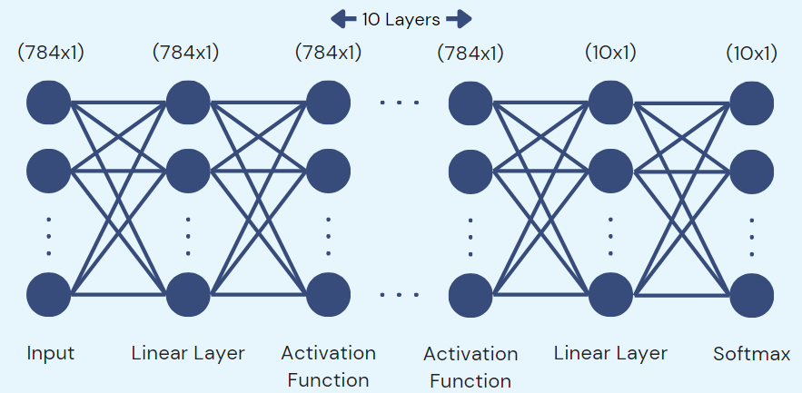

Effect of Dropout on Performance of Different Activation Functions
Tags: Neural Network, Python, Pytorch
Dropout is an important method to improve the generalizability of a
model. However, it may also have different levels of effect on
different activation functions. Applying too much dropout can result
in slower model training or even unsuccessful training. Thus, knowing
where to apply dropout effectively can ensure efficient model training
with the improved generalizability. Thus, the objective of our project
is to compare the effect of dropout on the performance of models using
different activation functions, specifically ReLU, Leaky ReLU,
Sigmoid, and Tanh.
In a neural network, an input passes through multiple layers of
neurons, each associated with a learned equation, and outputs a
prediction. However, the relatively simple structure of those
equations makes it so one would need a lot of layers to achieve
complexity in the model. To solve this, activation functions were used
to introduce non-linearity,resulting in more complexity of the model.
An activation function takes the result of a neuron and computes a new
output. This output is then used as an input for the next layer of
neurons or as the final result of the model. There are multiple kinds
of activation functions with different characteristics and behaviours,
examples being ReLU, Tanh, Sigmoid, Swish, etc. On the other hand,
dropout is a regularization technique in which one "drops" (sets to 0)
the output of a certain percentage of neurons during training, and
then repeat over multiple iterations, which can eliminate undesirable
“kinks” in the function that don't affect the loss. "Regularization",
is the act of making adjustments to a model so that it generalizes
better, which may improve the test performance of the model. Thus,
knowing how to apply dropout effectively can is improtant in ensuring
model training performance.
As observed in Jumpout: Improving Dropout Rates for DNN with ReLU,
each iteration of dropout may have different effective deactivation
rates, resulting in different dropout efficiencies. Thus, the dropout
efficiencies for different activation functions should also be
different.Thus, knowing where to apply dropout effectively can ensure
efficient model training with the improved generalizability. For the
project, we came out with two hypotheses on how specific
characteristics of an activation function could affect the model
training.
Boundedness Characteristic:
During dropout, a percentage of neurons have their outputs set to
zero. We can quantify the impact of dropout on a neuron by the
difference in output value if it was not dropped out and after
dropout. The larger this difference, the more impact dropout has on
the model and thus more potential for improvement with dropout. For
bounded activation functions, this difference is smaller as there is a
maximum range of values the output can be. This would imply bounded
activations function will improve less with dropout. We would predict
that the Leaky ReLU activation function, which is unbounded, would
improve the most from dropout, followed by ReLU activation function,
which is partially bounded, then the Tanh activation function, which
has a range of 2, and lastly the Sigmoid activation function, with a
range of 1.
Presence/Absence of Negative Value:
Dropout sets the output value of a neuron to zero, however, if the
output value of the neuron was already zero, dropout would not have
any effect on the neuron. This can reduce the efficiency of dropout
and hinder model training. Since ReLU functions can only output a
positive value or a zero, it is more likely that a neuron with an
output value of zero would be dropped out. This could mean that ReLU
functions would experience less improvement from dropout. Thus, we
predict that the Leaky ReLU activation function would perform better
than the ReLU activation functions.
In order to compare improvements in performance due to dropout, we
need to quantify the performance of a model. Thus, we define the
performance using the minimum Negative Log-likelihood Loss on the test
dataset. Each model is run 30 times to get the average difference
between the minimum NLL of the model and the minimum NLL of the model
with dropout applied for the 30 models. The percentage difference is
obtained and used to compare with other models.

The input data is flattened into a 784 x 1 vector and fed into the
model. These values first go through a linear layer, which is a linear
transformation that outputs a 784 x 1 vector. They are then passed
through 10 layers of the activation functions, with size 7841 x 1 ,
then to another linear layer that outputs a 10 x 1 vector. This goes
through a softmax function to categorize the outputs into the 10
possible digits for the output. The dropout is applied only to the
activation functions and not to the other layers. After averaging 30
runs for each model, the above results for percent change with dropout
is obtained. Leaky ReLU improves the most, followed by ReLU, Tanh, and
lastly the Sigmoid activation function. Thus, from our results, we
recommend using dropout on ReLU or Leaky ReLU functions. If Sigmoid or
Tanh activation functions are required for the model, we suggest
adding a linear transformation to increase its range before applying
dropout, or adding a linear layer and applying dropout to the linear
layer.